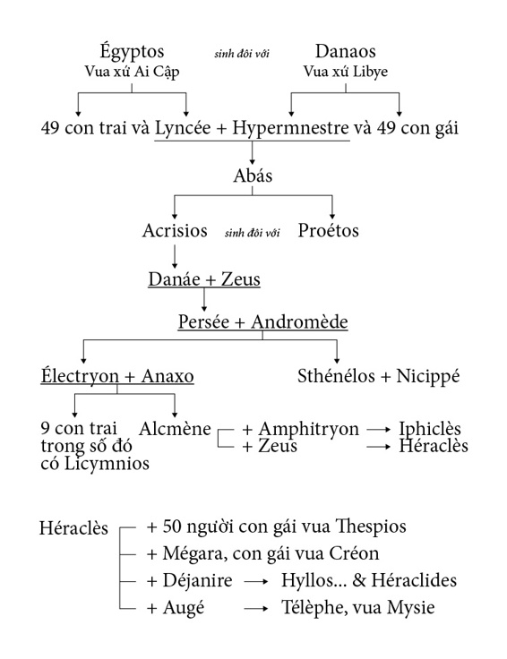

Sau khi Héraclès chết, mẹ chàng cùng với các con của chàng từ thành Thèbes rời về Tirynthe sống với người con trai lớn tên là Hyllos. Nhưng họ sống ở nơi đây không được bao lâu. Eurysthée, vị vua hèn nhát và thù vặt vốn chẳng ưa gì Héraclès đã từng hành hạ Héraclès bằng đủ mọi cách mà chẳng thể bôi nhọ được chàng thì nay trút tất cả nỗi căm tức của mình vào những đứa con của Héraclès. Một nghiêm lệnh được ban bố: Những con cháu của Héraclès không được cư ngụ trên đất Tirynthe. Một nghiêm lệnh khác tiếp theo: Cấm mọi đô thành, xứ sở, miền núi cũng như miền xuôi không được chứa chấp lũ người này. Thế là những người con của Héraclès phải đi lang thang phiêu bạt hết chỗ này đến chỗ khác. Thương xót tình cảnh những người cùng máu mủ, Iolaos, người bạn đường của Héraclès đã từng tham gia chiến đấu với Héraclès trong sự nghiệp vĩ đại, đã bất chấp lệnh của tên vua hèn nhát và thù vặt, cứ đón nhận những người con của Héraclès. Kể ra theo huyết thống thì Iolaos là anh em con chú con bác ruột với những người con của Héraclès (ông là con của Iphiclès mà Iphiclès và Héraclès là hai anh em sinh đôi). Những việc làm nhân nghĩa của Iolaos đã không che giấu được Eurysthée. Biết chuyện, tên vua hèn nhát và thù vặt này lập tức đem quân vây bắt. Bây giờ thì chẳng có ai địch được hắn cả. Quyền thế trong tay hắn, một kẻ bất tài vô đạo, làm cho hắn trở thành một kẻ hãnh tiến dương dương tự đắc, sử dụng quyền lực để hãm hại những người lương thiện, những người con của Héraclès. Hắn tìm thấy niềm vui sảng khoái trong sự thù hằn nhỏ nhen đê tiện. Iolaos và những Héracleidae phải chạy sang lánh nạn ở đô thành Athènes lúc này do Démophon người con trai danh tiếng của người anh hùng Thésée và nàng Phèdre xinh đẹp cai quản. Eurysthée sai sứ thần sang Athènes đòi Démophon phải nộp những Héracleidae, nếu không, hắn sẽ kéo quân sang trị tội. Mặc cho những lời đe dọa láo xược và hung hăng, Démophon vẫn không hề run sợ. Nhà vua kiên quyết bảo vệ truyền thống quý người trọng khách thiêng liêng do thần Zeus đã ban truyền dạy dỗ, nhất là đối với những người đang gặp nạn cầu xin sự che chở, bảo hộ. Chẳng bao lâu, Eurysthée kéo đại quân tràn vào vùng đồng bằng Attique. Tình cảnh quả là rất đáng lo ngại vì quân thù đông gấp bội.
Nhân dân Athènes bèn sắm sanh lễ vật đến đền thờ các vị thần Olympe để cầu xin một lời chỉ dẫn. Lời thần phán bảo: Athènes sẽ chiến thắng vinh quang nếu hiến dâng cho các vị thần một người con gái. Macaria, người con gái lớn của Héraclès và Dejánire tình nguyện hy sinh làm lễ vật hiến tế để Athènes giành được chiến thắng. Trong cuộc chiến đấu nổ ra ác liệt, những người Athènes tuy ít nhưng chiến đấu với tinh thần quyết bảo vệ bằng được xứ sở thân yêu của mình cho nên quân địch, mặc dù đông mà vẫn không đè bẹp được đối phương. Đang lúc cuộc đọ sức diễn ra gay go, bất phân thắng bại thì Hyllos đem một đạo quân đến tiếp viện cho quân Athènes. Tình thế liền xoay chuyển. Quân của Eurysthée bị tiêu hao nặng và cuối cùng phải tháo chạy. Ngay tên vua cầm đầu cuộc hành quân này cũng không có gan trụ lại để củng cố đội ngũ của mình. Vừa thấy núng thế là hắn nhảy phắt lên xe chạy trốn. Hyllos kịp thời phát hiện. Chàng nhảy lên ngay cỗ xe của cha mình truyền lại, tế ngựa rượt theo. Thấy vậy, Iolaos cũng vội nhảy lên xe. Ông khẩn khoản xin người con trai của Héraclès nhường cho mình cái vinh dự đuổi bắt Eurysthée. Người chiến hữu của Héraclès muốn được tự tay trực tiếp trả thù cho Héraclès. Iolaos quất ngựa cho chúng phi nước đại. Ông quyết đuổi bằng được tên vua khốn kiếp hèn nhát và thù vặt. Khoảng cách giữa hai cỗ xe rút ngắn dần. Giờ quyết định sắp đến, Iolaos cầu khấn các vị thần Olympe ban cho mình sức mạnh, sự cường tráng, nhanh nhẹn, óc thông minh và đôi mắt tinh tường. Ông chỉ xin các vị thần ban cho mình những báu vật đó một ngày thôi, chỉ một ngày thôi đủ sức cho ông chiến thắng trong cuộc giao tranh. Báu vật đó xưa kia các vị thần đã ban cho ông nhưng những nữ thần Heures-Thời gian đã tước đoạt mất. Giờ đây ông chỉ còn lại sự chậm chạp và yếu đuối. Chấp nhận lời thỉnh cầu của Iolaos, các vị thần liền giáng xuống hai ngôi sao. Hai ngôi sao bay vút từ bầu trời cao xuống rồi nở ra một đám mây đen trùm kín lên cỗ xe. Tan mây, Iolaos hiện ra như một dũng tướng thời trai trẻ, mắt sáng quắc, tay gân guốc, oai phong lẫm liệt, đường bệ, tinh nhanh. Ông quất ngựa đuổi theo Eurysthée và đã đuổi kịp. Chĩa ngọn lao vào sau lưng tên vua khốn nạn đó, Iolaos bắt hắn phải hàng phục. Và hắn đã cam chịu hàng phục. Iolaos giải hắn về Athènes. Trông thấy tên vua Eurysthée, kẻ đã từng hành hạ con mình, cháu mình, Alcmène sôi máu lên, bà chạy ngay đến chỗ hắn bị trói, móc con mắt của hắn ra vứt đi cho hả lòng căm giận mặc dù đã có nhiều người can ngăn. Có chuyện kể, Eurysthée không bị bắt sống mà bị chặt đầu đem về. Và Alcmène cũng đã đối xử như đã kể với cái đầu của tên vua hèn nhát và thù vặt ấy. Kể ra thì hành động này chẳng lấy gì làm cao thượng. Tuy nhiên, những Héracleidae vẫn làm lễ mai táng cho Eurysthée với đầy đủ nghi lễ. Y được chôn trên mảnh đất gần đền thờ nữ thần Athéna.
Thế là Eurysthée và con gái của hắn đã bị trừng phạt. Giờ đây những Héracleidae phải tìm cách trở về vùng đồng bằng Péloponnèse để sinh cơ lập nghiệp, chấm dứt cái cảnh ăn nhờ ở đợ. Hyllos sau một thời gian chuẩn bị bèn thống lĩnh anh em họ hàng xuất tiến về phía nam. Cuộc chiến đấu diễn ra dằng dai. Cuối cùng Hyllos phải ra lệnh thu quân về vì một bệnh dịch lan tràn làm chết khá nhiều binh sĩ. Đoán rằng có một điều gì đó không ổn, những Héracleidae bèn đem lễ vật hiến tế tới dâng các vị thần để xin lời chỉ dẫn. Lời thần phán truyền như sau: Nếu biết đợi cho qua ba mùa gặt, những Héracleidae sẽ thành công. Hyllos làm theo lời thần dạy. Chờ cho vụ gặt thứ ba xong nghĩa là ba năm sau chàng lại chiêu tập binh mã mở cuộc hành quân. Những Héracleidae tràn vào vương quốc Arcadie. Cuộc chiến đấu kết thúc bằng cái chết của Hyllos và sự rút quân của những Héracleidae. Theo truyền thuyết, cuộc tiến quân lần thứ hai này xảy ra trước cuộc Chiến tranh Troie hơn mười năm.
Sau cái chết của Hyllos, những Héracleidae tạm ngừng các cuộc hành binh lại. Người thì nói, thời kỳ này kéo dài tới một trăm năm, người thì bảo, chỉ quãng năm mươi năm thôi. Cháu của Hyllos là Aristomakhos tiếp tục sự nghiệp của ông cha. Lần này những Héracleidae mưu vượt qua eo đất Corinthe để tiến xuống Péloponnèse, nhưng lại thất bại. Aristomakhos bị giết chết. Người xưa kể, nguyên nhân thất bại là do những Héracleidae hiểu sai lời phán truyền của thần. Thần dạy phải tiến xuống phương nam qua eo biển thì họ lại tiến qua eo đất. Tiếp sau Aristomakhos là ba người con trai: Téménos, Cresphontès, Aristodème. Họ đoán định lại lời thần truyền dạy: “Eo biển” phải hiểu là quãng biển giữa miền đất Hy Lạp và bán đảo Péloponnèse. Những Héracleidae thuộc thế hệ này lại cũng cho rằng đây là thời cơ để họ giành được thắng lợi. Mùa gặt thứ ba là gì? Là thế hệ thứ ba. Và chính họ là thế hệ thứ ba, đích thực là như thế. Cuộc xâm nhập cứ thế tiến hành. Lại những trận giao tranh đẫm máu. Aristodème bị tử trận. Có người nói, chàng bị sét đánh chết. Hai con trai của chàng là Proclès và Eurythénès tiếp tục thay cha đảm đương sự nghiệp chinh phạt đến cùng. Téménos và Cresphontès lại đến đền thờ xin thần thánh chỉ bảo. Thật lạ lùng! Thần dạy: muốn giành được thắng lợi phải có một vị tướng có ba mắt. Nghĩ mãi không hiểu lời thần truyền phán thế nào, những Héracleidae phải triệu tập hội nghị các tướng lĩnh để đoán định, giải đáp lời thần. Cuối cùng họ đã nghĩ ra. Những Héracleidae ra lệnh xuất quân. Lần này vị tổng chỉ huy là một dũng sĩ chột mắt. Chàng tên gọi là Oxylos, vua xứ Élis. Một mắt của chàng với hai con mắt của con ngựa chàng cưỡi thì đúng hẳn là ba rồi! Dưới sự chỉ huy của chàng, những Héracleidae tràn được vào vùng đồng bằng Péloponnèse. Con trai của Oreste là Tisaménos bị giết chết. Những Héracleidae chia nhau cai quản các khu vực: Téménos được chia đất Argos, Proclès và Eurythénès được vùng Laconie, còn Cresphontès được vùng Messénie.
Các nhà nghiên cứu cho biết, truyền thuyết về cuộc Nam tiến của những Héracleidae phản ánh những đợt di cư của những tộc người Doriens trong lịch sử hình thành dân tộc Hy Lạp và đất nước Hy Lạp thời kỳ mà những tộc người này tiến xuống chiếm lĩnh bán đảo Péloponnèse. Thắng lợi của những tộc người này trong lịch sử được phản ánh trong hình thái truyền thuyết với những biến thái, khúc xạ mà chúng ta chỉ có thể lĩnh hội nó trong ý nghĩa tượng trưng đại thể của câu chuyện. Bởi vì truyền thuyết không phải là lịch sử như là một khoa học. Nếu chúng ta đặt câu hỏi, giữa nhận xét Héraclès khôi phục các trò thi đấu xưa kia của người Crète để phục vụ cho những người chủ mới của bán đảo Hy Lạp là những người Doriens mới di cư đến với nhận xét cuộc Nam tiến của những Héracleidae phản ánh những đợt di cư của những tộc người Doriens có mối quan hệ như thế nào? Trật tự thời gian ra sao? Vì sao đời cha, Héraclès, đã nói có những người Doriens di cư đến mà đến đời con, đời cháu sau này lại cũng nói những người Doriens di cư đến? thì truyền thuyết không thể giải đáp được.
Sự thắng lợi của những tộc người Doriens trong quá trình chinh phục bán đảo Hy Lạp đã để lại một dấu ấn trong đời sống xã hội. Hầu hết những gia đình vương giả thuộc hệ quý tộc cũ trong xã hội Hy Lạp đều quy chiếu nguồn gốc của gia đình về những Héracleidae. Họ dựng lên những bản gia hệ, gia phả mà truy nguyên ngược mãi lên thì ta thấy cội nguồn là thuộc dòng dõi Héracleidae. Tất cả đều là con, cháu, chắt, chút chít của Héraclès. “Bệnh” này lây cả sang đến giới quý tộc La Mã. Hẳn rằng cái “mốt” lý lịch, dòng dõi Héracleidae này không phải chỉ thuần túy là con đẻ của cái thói xấu “thấy người sang bắt quàng làm họ” mà nó còn có một mục đích thực dụng xã hội-chính trị rõ rệt trong cuộc sống của một xã hội đã hình thành những giá trị mới và những cách đánh giá mới.
Gia hệ người anh hùng Héraclès
